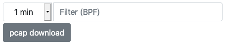

5. Live Pcap Download
A pcap file containing packets matching a certain host can be generated on-the-fly by ntopng and streamed via web using a browser or by directly requesting endpoint live_traffic.lua.
In order to download the pcap using the web GUI, click on the pcap hyperlink available on every host page and device page. You can control the pcap duration and set an optional BPF filter for further filtering packets.

Link for downloading the pcap file
The pcap file can also be downloaded directly through http, using a command line tool such as wget or curl.
The direct URL for downloading the pcap is http://<ntopng IP>:3000/lua/rest/v2/get/pcap/live_traffic.lua?ifid=<interface index>&host=<host IP>.
Please note that you should use cookies for authentication, as explained in the documentation. For example with curl you can specify
username and password with --cookie "user=<user>; password=<password>"
Command line tools are useful for example to read a pcap stream and pipe it to an analysis tool such as tcpdump or tshark/wireshark. For example, to process the traffic matching host 192.168.2.1 with wireshark, it is possible to use curl as in the example below:
curl -s --cookie "user=admin; password=admin" "http://192.168.1.1:3000/lua/rest/v2/get/pcap/live_traffic.lua?ifid=12&host=192.168.2.1" | wireshark -k -i -
Similarly, the traffic of the whole interface with id 0 can be sent to tshark with
curl --cookie "user=admin; password=admin1" "http://devel:3000/lua/rest/v2/get/pcap/live_traffic.lua?ifid=0&duration=600&bpf_filter=" | tshark -i -